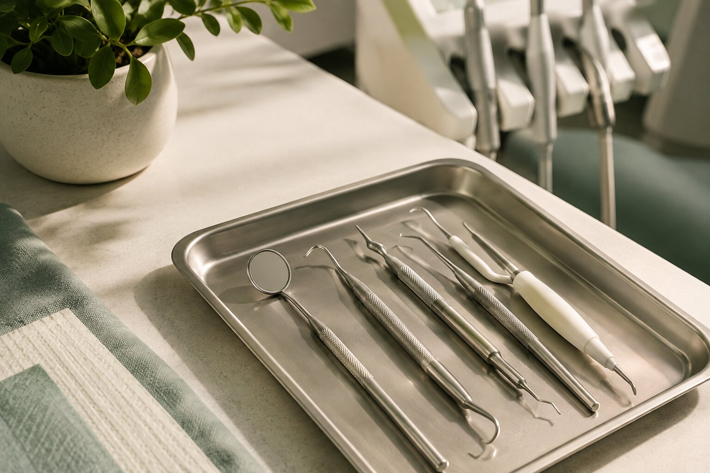

“Doctor, Scaling Will Loosen My Teeth.”

A dentist explains what actually happens during a dental cleaning, why your teeth may feel different afterward, and what you should really know about scaling.
“Doctor, I don't want scaling. I've heard it makes your teeth loose.”
And honestly, I understand why people are scared.
Why are people afraid of scaling?
Someone has told them that after getting their teeth cleaned, their teeth felt different. Someone else noticed spaces between their teeth. Another person said, “My teeth became sensitive after scaling.”
So naturally, the conclusion becomes:
“Scaling must have damaged my teeth.”
But is that actually what happened?
First: What exactly is scaling?
Dental scaling is a professional procedure used to remove deposits such as plaque and calculus, commonly called tartar, from the teeth.
Plaque is a soft bacterial film that constantly forms on our teeth. If it isn't adequately removed, it can mineralize and become calculus.
And here's the important part:
That's one of the reasons professional cleaning may be recommended.
“But Doctor, my teeth weren't loose before scaling.”
This is where things get interesting.
Sometimes a person comes for a cleaning and already has significant gum inflammation or periodontal disease.
Deposits around the teeth can make it harder to see and assess what's happening around the gums and supporting tissues.
When those deposits are removed, the teeth and gums may feel different. In someone who already has periodontal disease and loss of supporting tissues, the teeth may also feel more mobile once the heavy deposits are gone.
And that can be frightening.
But removing calculus isn't the same thing as creating the underlying periodontal problem.
Untreated periodontal disease can damage the tissues and bone supporting the teeth and, in advanced disease, contribute to tooth loss.
“Then why did I suddenly notice spaces?”
Imagine calculus has accumulated around the teeth for quite some time.
Once that calculus is removed, the natural contours around the teeth become visible again.
If there was already gum inflammation, recession, or loss of periodontal support, those changes may become more noticeable after the deposits are removed.
So the cleaning may have revealed something that was already there rather than creating it.
That's an important distinction.
What about sensitivity after scaling?
Yes — some people can experience sensitivity after professional cleaning, particularly when deeper periodontal cleaning has been performed.
This does not automatically mean that your enamel has been damaged.
The sensitivity is often temporary, especially after deeper cleaning. If it is severe, persists longer than expected, or is accompanied by other symptoms, it's worth going back to your dentist rather than simply ignoring it.
So… does scaling damage your enamel?
Here's where I don't want to give you an oversimplified internet answer.
Professional scaling is intended to remove deposits while preserving tooth structure.
However, research has shown that instrumentation can produce surface changes depending on the instrument, technique, pressure and condition of the tooth. Much of this evidence comes from laboratory studies, so it should not be interpreted as meaning that routine professional scaling routinely “damages” healthy teeth.
This is exactly why scaling is a clinical procedure — not a situation where “more pressure means better cleaning.”
The operator, instrument selection, technique and condition of the tooth all matter.
Restorations such as fillings and crowns may also require consideration because different instruments can affect restorative materials differently.
Then why do dentists recommend scaling?
Because calculus isn't harmless simply because it is sitting on your teeth.
Calculus can make plaque control more difficult and is associated with gingival inflammation and periodontal disease.
Professional removal is therefore an important part of managing these deposits and, when indicated, periodontal disease.
For patients with periodontitis, scaling and root planing is an established non-surgical periodontal treatment.
So what should you actually ask your dentist?
Instead of simply asking:
A better conversation is:
“Why do I need scaling?”
“Is this a routine cleaning or periodontal treatment?”
“Do I have gum disease?”
“Will I have sensitivity afterward?”
“Do I have any fillings, crowns or other restorations that need special consideration?”
One thing I wish more patients knew
You don't have to be scared of asking questions.
A good dental consultation shouldn't simply be:
“You need scaling.”
It should also be:
“Here's why I recommend it, here's what I'm going to do, and here's what you can expect afterward.”
The takeaway
If you've been avoiding scaling because someone told you that “once you start scaling, your teeth will become loose,” don't make your decision based on that statement alone.
Professional scaling is intended to remove deposits that cannot be adequately removed with routine home care.
But professional cleaning isn't a one-size-fits-all procedure. Your gums, teeth, restorations, periodontal condition and the type of deposits present all matter.
So before saying no to a recommended cleaning, ask your dentist to explain why you need it and what type of cleaning is being recommended.
Sometimes the thing you're afraid of isn't the thing causing the problem.
And sometimes, the cleaning simply allows us to finally see what's been happening underneath.
— Dr. Anushka Choudhary, BDS
References
1. American Dental Association. Scaling and Root Planing for Gum Disease.
2. American Dental Association. Periodontitis.
3. Slot DE, Koster TJG, Paraskevas S, Van der Weijden GA. The effect of the Vector® scaler system on human teeth: a systematic review. International Journal of Dental Hygiene. 2008;6(3):154–165.
4. Li W, et al. Treating periodontitis: a systematic review and meta-analysis comparing ultrasonic and manual subgingival scaling at different probing pocket depths. BMC Oral Health. 2020;20:247.
5. Esati J, et al. Adverse Effects of Ultrasonic Instrumentation and Air Polishing on Dental Restorations: A Systematic Review of Laboratory Studies. Journal of Esthetic and Restorative Dentistry. 2025.
Educational Disclaimer
This article is intended for general dental education and does not replace an individual dental examination, diagnosis or treatment plan.